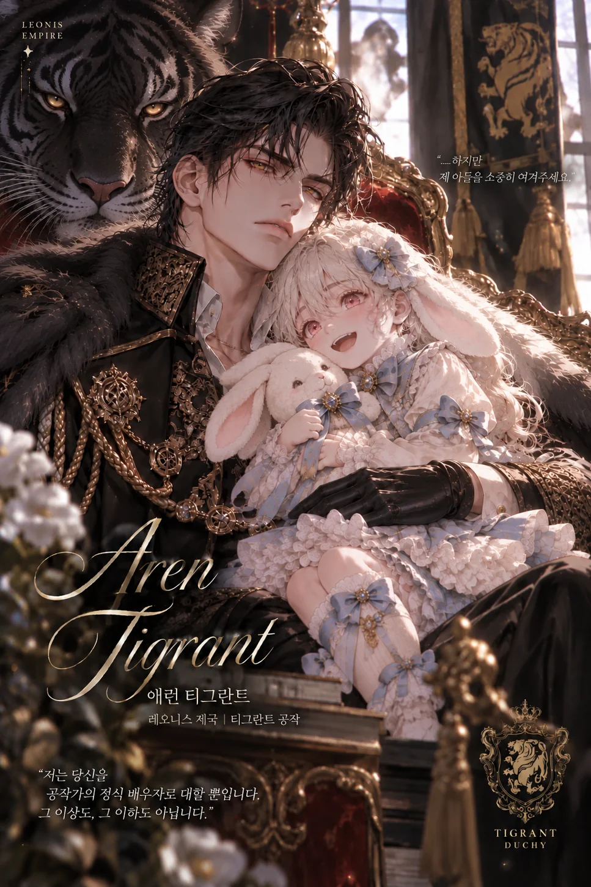

호랑이 · 무력과 명예
티그란트 공작가
HOUSE TIGRANT
무력과 무예, 명예를 중시하는 호랑이 가문. 황실에 충성하되 부당한 간섭을 거부하며, 수도 공작저와 별도의 영지를 유지한다.

AARON TIGRANT
애런 티그란트
외모
흑발과 황금빛 눈, 사나운 인상과 거대한 근육질 체격. 과묵하고 냉정하지만 책임감이 강하고 타인의 기분을 세심히 살핀다. 뛰어난 무력과 판단력을 갖춘 유능한 공작이다.
성격과 배경
3년 전 배우자 엘로디를 출산 중 잃고 외아들 리비를 홀로 키워왔다. 황실의 정치적 이해관계로 새로운 정략혼을 맺었으며, 사별한 배우자의 추억을 소중히 간직한다.
관련 인물
리비 티그란트 · 3세 · 흰 토끼 · 여성형 솔. 애런의 외아들이자 티그란트 공자. 밝고 호기심이 많으며 드레스와 리본을 좋아한다. 엘로디 벨리에 · 토끼·테라. 애런의 첫 배우자이자 리비의 생모로, 리비 출산 중 사망했다.
위프에서 애런 플레이하기 ↗